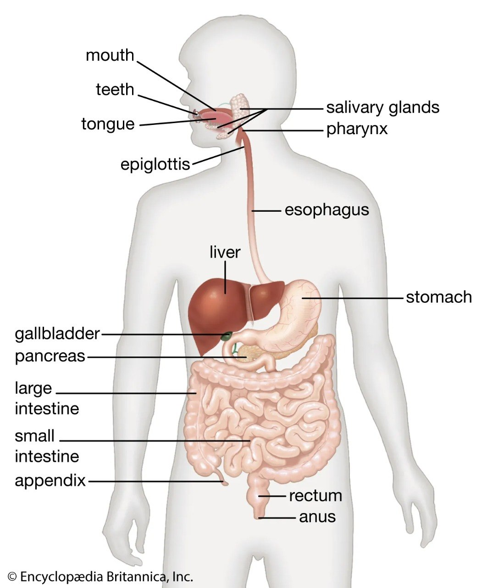
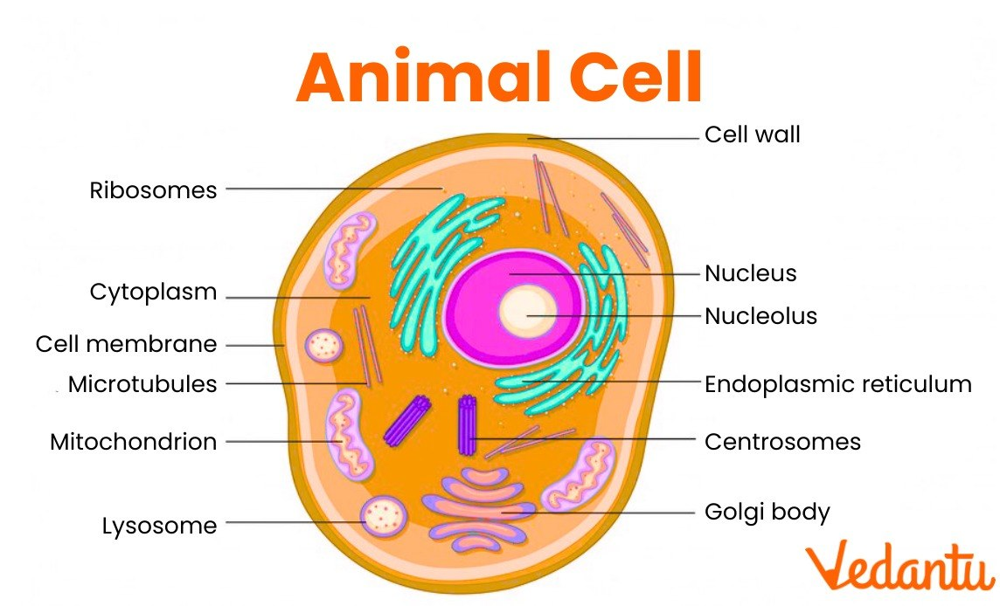
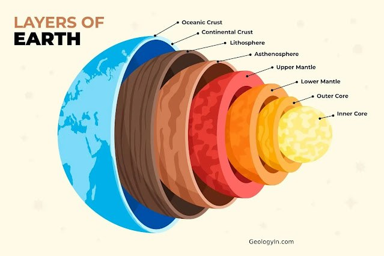
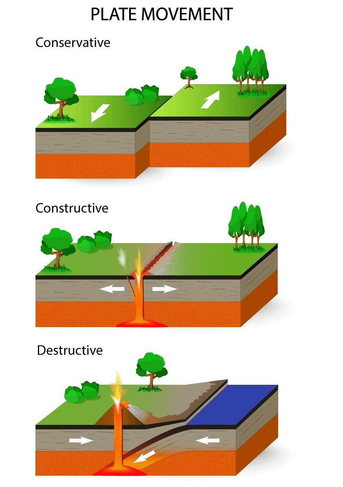

这里把 Biology、Chemistry、Geography 和 Maths 拆成更清楚的 student dashboard，先看 summary，再做图、练习和 quiz。
Digestion 会把 food 分解成可吸收的小分子。Ion 是 charged particle。Tectonic plates 与 earthquakes 和 volcanoes 有关。Factorisation、quadratics 和 LCD 都是重点。
先看 diagram，再点 labels，最后记 function 和 examples。
请选择一个 organ。
Variants: ingestion, digestion, absorption, egestion.

请选择一个 cell part。
Variants: plant vs animal cells, respiration, protein synthesis.

先记常见元素和 ions，再看 equation patterns。
点击 element 查看信息。现在是 expanded school-use 版本，后面还能继续补完整排布。
请选择一个 element。
请选择一个 ion。
请选择一个 equation block。
把结构图和 boundary types 连起来理解，记住不同板块运动的结果。
请选择一层。
Variants: temperature, thickness, state of matter.

请选择一种 boundary type。
Variants: volcanoes, earthquakes, new crust, subduction.

先看 graph shape，再记公式和变式。
当前直线 Current line: y = 1x + 0
Variants: positive gradient, negative gradient, steeper line, larger intercept.
当前曲线 Current curve: y = x²
Variants: y=x², y=2x²+3x+1, y=-x²+4, y=x²-6x+5.
请选择一种 factor form。